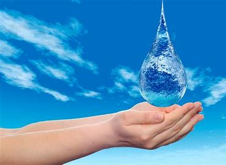
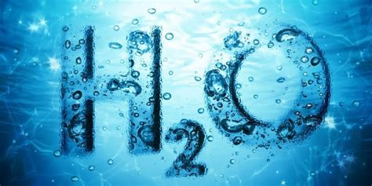
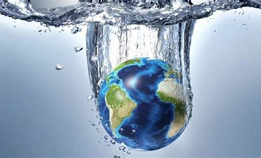

Bienvenido al Proyecto Agua
El agua es uno de los recursos más importantes para la vida en la Tierra. En este sitio encontrarás información relevante, actividades, y herramientas para comprender su importancia y cómo cuidarla.
Explora nuestras secciones
| Sección | Descripción |
|---|---|
| Información sobre el Agua | Aprende datos esenciales sobre el agua, su composición y su distribución en el planeta. |
| Actividades | Descubre juegos, proyectos y retos educativos sobre el agua. |
| Cuidado del Agua | Consejos prácticos para cuidar este recurso en tu día a día. |
| Impacto Ambiental | Conoce cómo nuestras acciones afectan los recursos hídricos. |
| Distribución del Agua | Explora cómo el agua está distribuida en diferentes partes del mundo. |
| Agua y Cambio Climático | Entiende cómo el cambio climático está modificando los ciclos hídricos. |
| Tecnología y Agua | Descubre tecnologías innovadoras para conservar y tratar el agua. |
| Proyectos Comunitarios | Inspírate con proyectos en los que las comunidades están protegiendo el agua. |
| Contacto | Comunícate con nosotros para colaborar o aprender más. |
Video Destacado
Galería


